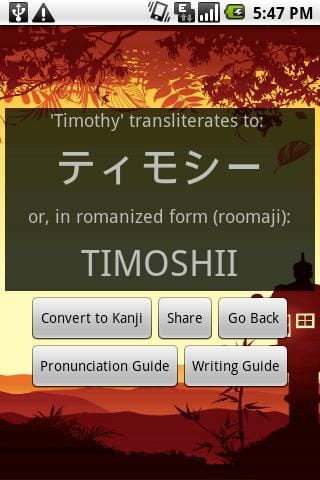

Your name in Japanese katakana.
The Japanese Name Converter uses a combination of dictionary lookup, substitution rules, and machine learning to convert English characters into katakana.
For common English names, a dictionary lookup of about 4,000 English names is used. For other names, a learned substitution model trained on these names is applied instead. This method is very similar to the Transformation-Based Learner (TBL) invented by Eric Brill.Essentially, given a list of English/Japanese name pairs, the system learns a series of substitution rules to apply to the English input in order to get the Japanese output. For instance, the first rule the system learns is to replace the letter "L" with the letter "R", because there is no "L" in Japanese. Later on. more subtle rules are applied, such as "replace G with J if it's followed by an E." Here is the full list of rules.
This blog post gives more details, for those interested in a complete answer.
Congratulations, you took high-school Japanese. This web site was not designed for you.
The machine learning method sometimes makes mistakes. In my own tests, it had an accuracy of about 95% on a per-character basic, but your mileage may vary.
In my defense, transliteration is not an easy task, especially with a language as orthographically challenged as English. The vowel system is very irregular, and some names are even ambiguous. For instance, is Jaime pronounced /'jeɪmi:/ (JAY-mee) or /'haɪmeɪ/ (HIGH-may)?
In any case, always check with a Japanese friend before getting any badass tattoos based on this web site. And check with Mom too. Mom always knows best.
Now stop, you're going to make me blush. The code is open-source on GitHub and awaits your modifications.
You can download the Japanese Name Converter Android app from the Google Play Store.
It boasts a lot more features than this web site, including pronunciation guides, writing guides, and Kanji conversion.
